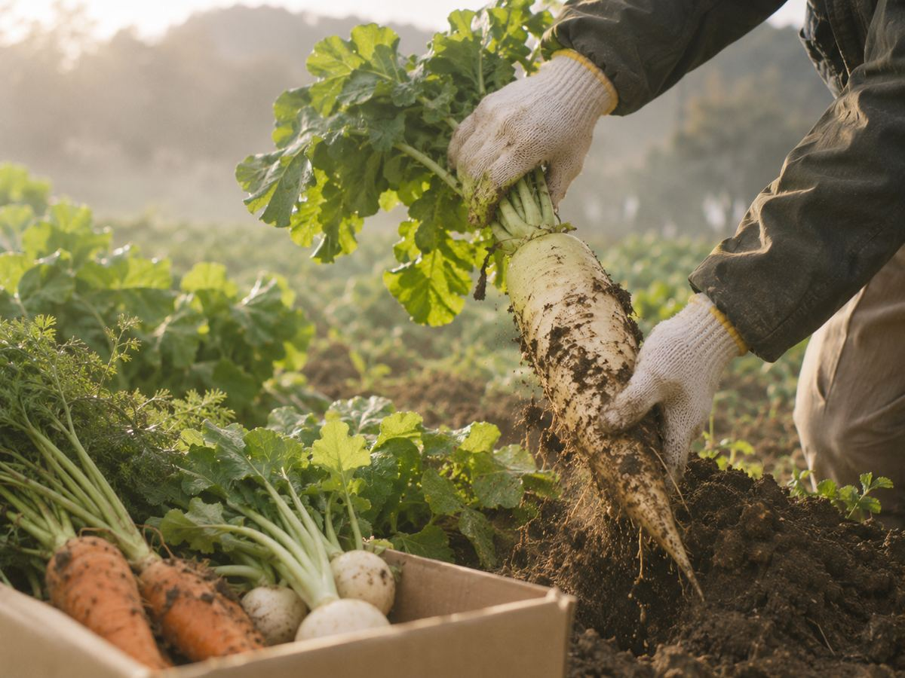
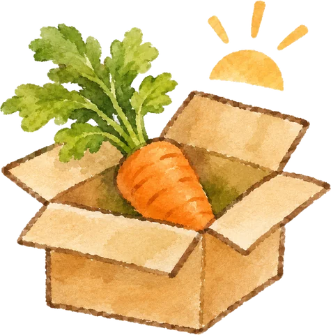
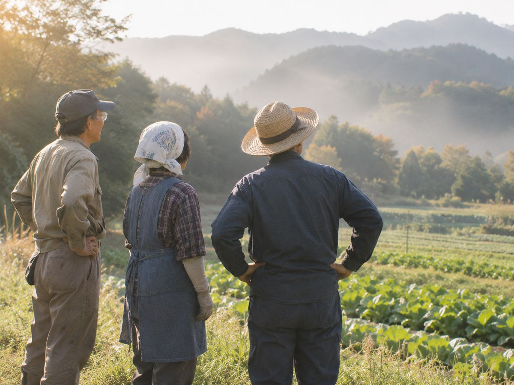
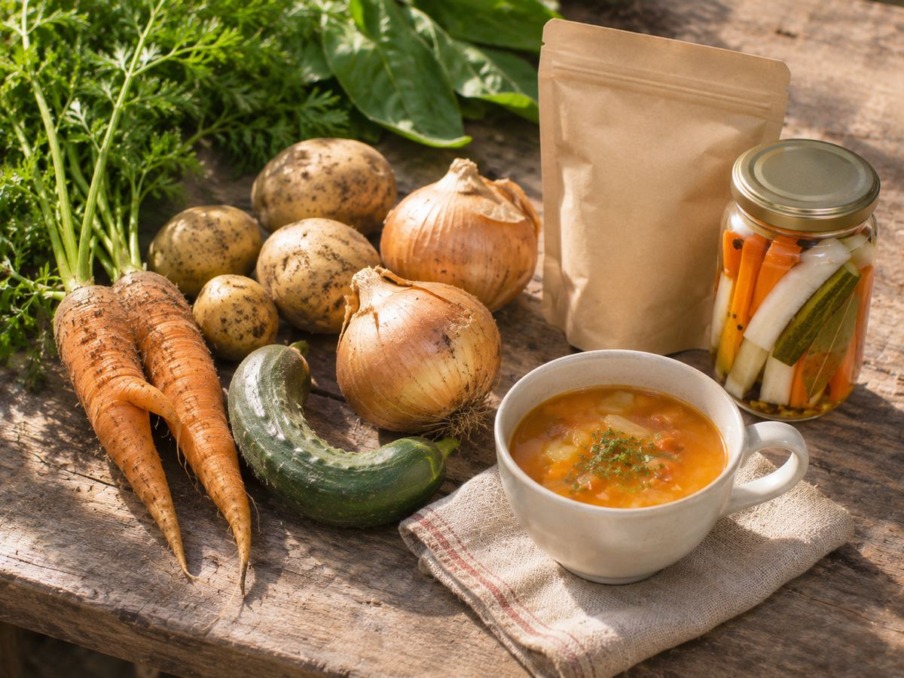
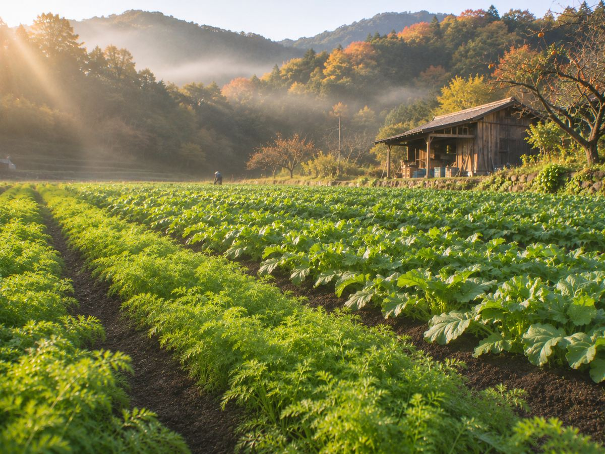
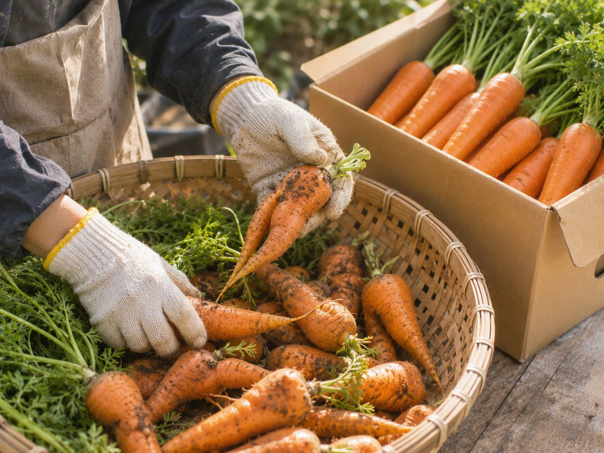

収穫の様子の写真
PROMISE 01有機JAS認証の野菜だけ。
収穫したその日に発送
つちのね便が扱うのは、有機JAS認証の野菜だけです。
畑で収穫した野菜は、その日のうちに箱に詰めて発送します。
クール便にも対応しています。
About Us
愛知県豊田市の自社農園と、三河エリアの契約農家12軒で、有機JAS認証の野菜を育てています。
Our Promise

収穫の様子の写真
PROMISE 01つちのね便が扱うのは、有機JAS認証の野菜だけです。
畑で収穫した野菜は、その日のうちに箱に詰めて発送します。
クール便にも対応しています。

生産者と畑の写真PROMISE 02
野菜を育てているのは、自社農園と、三河エリアの契約農家12軒。
生産者の顔、畑、育て方を1軒ずつ紹介しています。
セットには、生産者の手書きメッセージも同封します。

ふぞろい野菜の写真PROMISE 03
形が少しふぞろいなだけで出荷できない野菜を「ふぞろい野菜」としてお得に販売し、スープやピクルスにも加工しています。
畑の野菜を食べきることで、食品ロスを減らしています。

自社農園の写真Our Story
つちのね便は、豊田市の山あいにある小さな畑から始まりました。
代表の土屋が、祖父から受け継いだ畑で有機栽培に取り組んだのがきっかけです。
「とれたての野菜のおいしさを、もっと多くの人に届けたい」。
その思いに共感した三河エリアの農家とつながり、今では12軒の生産者と一緒に野菜を育てています。
Organic
つちのね便が扱うのは、有機JAS認証の野菜だけです。
収穫した野菜は、その日のうちに発送しています。
畑の土は、落ち葉や米ぬかを発酵させた自家製の堆肥で育てています。
化学合成された農薬や化学肥料は使わず、虫や病気に負けない元気な土づくりを大切にしています。

ふぞろい野菜の写真No Food Loss
形が少しふぞろいなだけで、規格外として出荷できない野菜があります。
つちのね便では、そうした野菜を「ふぞろい野菜」としてお得に販売しています。
スープやピクルスなどの加工品にもして、畑の野菜を食べきる工夫をしています。
Partners
三河エリアを中心に、つちのね便の野菜を使っていただいているお店です。
和食 たまゆら「朝どれの葉物は、そのまま炊き合わせに。
季節の移ろいを、野菜で感じてもらっています。」
Bistro ソルシエ「人参やかぶは、皮ごとローストするだけで一皿になります。
甘さがまるで違います。」
ベーカリー こむぎの木「かぼちゃとさつまいものパンは、秋冬の定番。
ふぞろい野菜も大切な材料です。」
カフェ 森のテラス「ランチのサラダとスープは、つちのね便の野菜だけで作っています。」
そば処 足助庵「春菊や舞茸の天ぷらは、香りが立つうちに。
畑から店まで車で10分の近さです。」
Access
毎週土曜日の朝、自社農園の直売所で、とれたての野菜を販売しています。

収穫したその日に発送した野菜を、生産者の手書きメッセージとレシピカードと一緒にお届けします。
お試しセットを申し込む（送料無料）お試しセットは初回限定・送料無料です。